scale_x_discrete(..., expand = waiver())scale_y_discrete(..., expand = waiver())
name, breaks,
labels, na.value, limits and guide. See
discrete_scale for more detailsYou can use continuous positions even with a discrete position scale - this allows you (e.g.) to place labels between bars in a bar chart. Continuous positions are numeric values starting at one for the first level, and increasing by one for each level (i.e. the labels are placed at integer positions). This is what allows jittering to work.
ggplot(diamonds, aes(cut)) + stat_bin()Error: StatBin requires a continuous x variable the x variable is discrete. Perhaps you want stat="count"?ggplot(diamonds, aes(cut)) + geom_bar()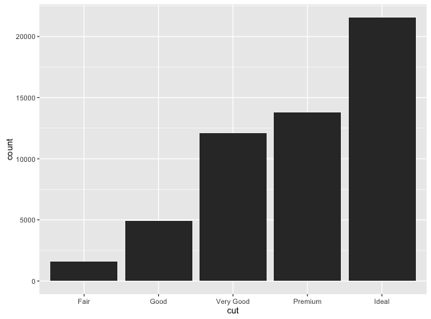
# The discrete position scale is added automatically whenever you # have a discrete position. (d <- ggplot(subset(diamonds, carat > 1), aes(cut, clarity)) + geom_jitter())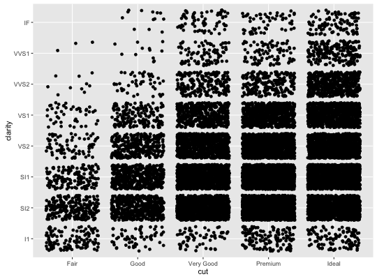
d + scale_x_discrete("Cut")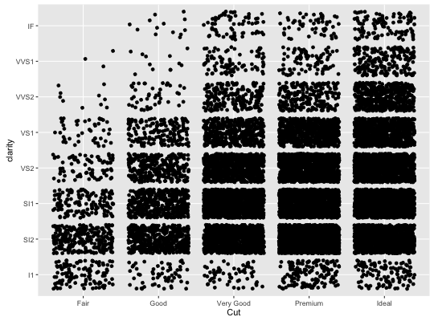
d + scale_x_discrete("Cut", labels = c("Fair" = "F","Good" = "G", "Very Good" = "VG","Perfect" = "P","Ideal" = "I"))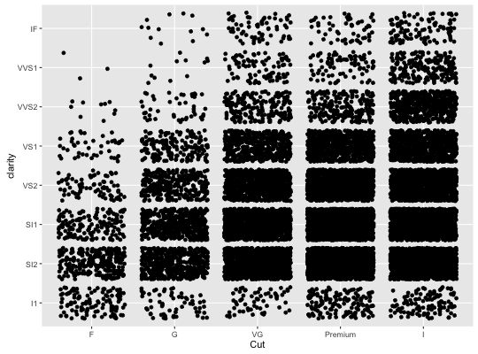
d + scale_y_discrete("Clarity")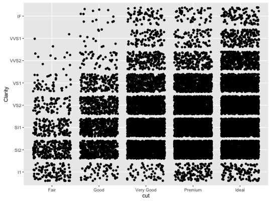
d + scale_x_discrete("Cut") + scale_y_discrete("Clarity")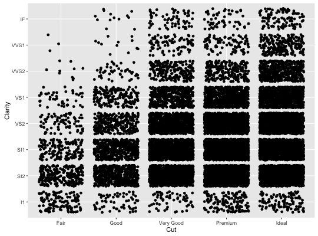
# Use limits to adjust the which levels (and in what order) # are displayed d + scale_x_discrete(limits=c("Fair","Ideal"))Warning message: Removed 11189 rows containing missing values (geom_point).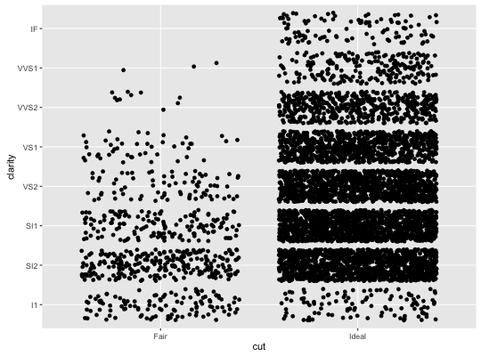
# you can also use the short hand functions xlim and ylim d + xlim("Fair","Ideal", "Good")Warning message: Removed 9610 rows containing missing values (geom_point).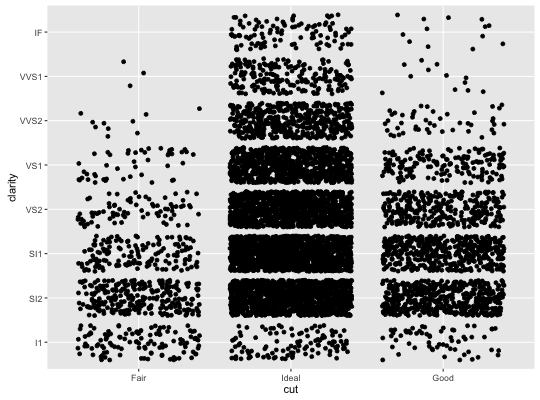
d + ylim("I1", "IF")Warning message: Removed 16770 rows containing missing values (geom_point).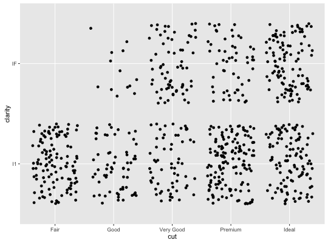
# See ?reorder to reorder based on the values of another variable ggplot(mpg, aes(manufacturer, cty)) + geom_point()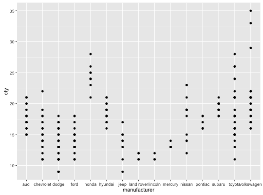
ggplot(mpg, aes(reorder(manufacturer, cty), cty)) + geom_point()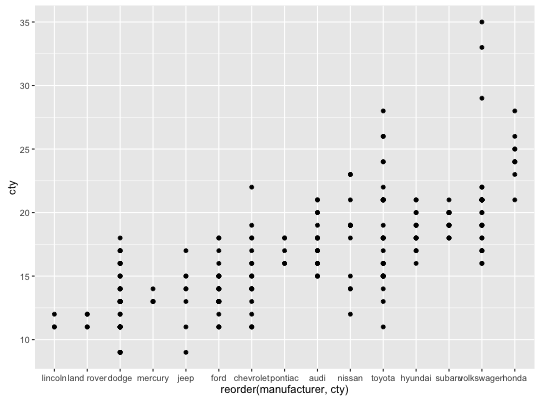
ggplot(mpg, aes(reorder(manufacturer, displ), cty)) + geom_point()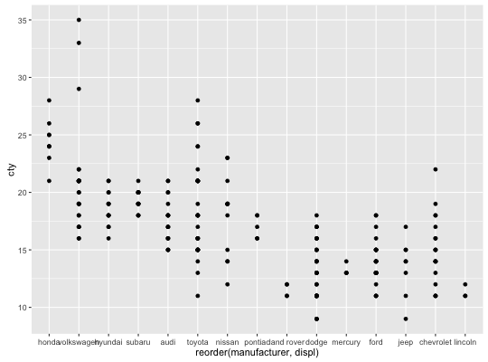
# Use abbreviate as a formatter to reduce long names ggplot(mpg, aes(reorder(manufacturer, displ), cty)) + geom_point() + scale_x_discrete(labels = abbreviate)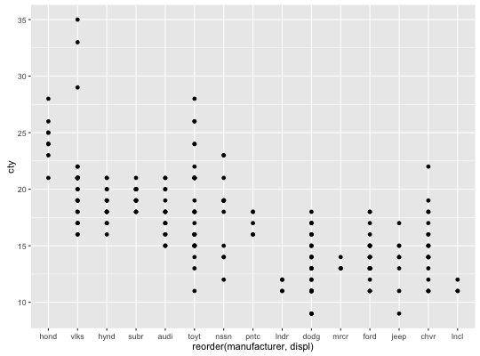